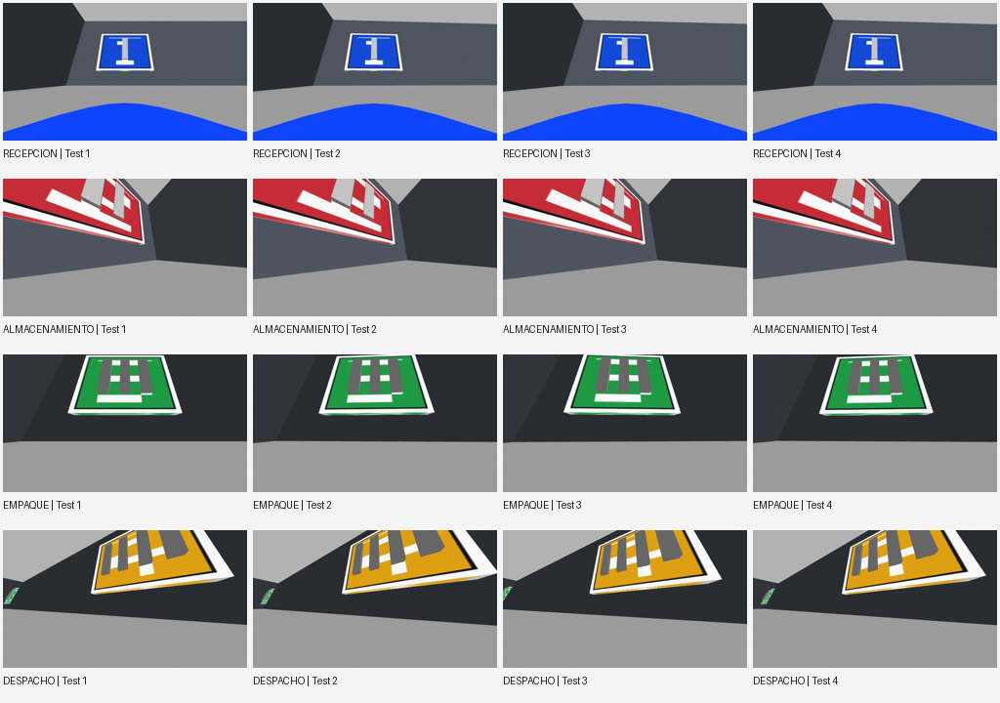

R22: 600 imágenes RGB; R23: primer entrenamiento ejecutado.
imágenes
train / val / test
exactitud test
Modelo: CNN ligera de referencia (no MobileNetV2 final).
Épocas: 8. Parámetros: 28004.
| Real\Pred | RECEPCION | ALMACENAMIENTO | EMPAQUE | DESPACHO |
|---|---|---|---|---|
| RECEPCION | 18 | 0 | 0 | 0 |
| ALMACENAMIENTO | 0 | 24 | 0 | 0 |
| EMPAQUE | 0 | 0 | 24 | 0 |
| DESPACHO | 0 | 0 | 0 | 24 |

Disponibles en historial.csv. Valores:
{
"train_accuracy": [
0.380952388048172,
0.6071428656578064,
0.6928571462631226,
0.8238095045089722,
0.8714285492897034,
0.9119047522544861,
0.9142857193946838,
0.961904764175415
],
"val_accuracy": [
0.800000011920929,
0.3444444537162781,
0.6000000238418579,
0.9333333373069763,
0.9333333373069763,
0.9555555582046509,
0.9444444179534912,
1.0
],
"train_loss": [
1.369909405708313,
1.1420750617980957,
0.7797133922576904,
0.5544396638870239,
0.3945310413837433,
0.29104459285736084,
0.25402992963790894,
0.182826429605484
],
"val_loss": [
1.2981640100479126,
0.9880561232566833,
0.7603103518486023,
0.34879374504089355,
0.2649359703063965,
0.21579813957214355,
0.20966829359531403,
0.12021694332361221
]
}
Nota: evaluaciones sobre dataset sintético. La exactitud es preliminar; R24/R25 corresponden a la entrega final.